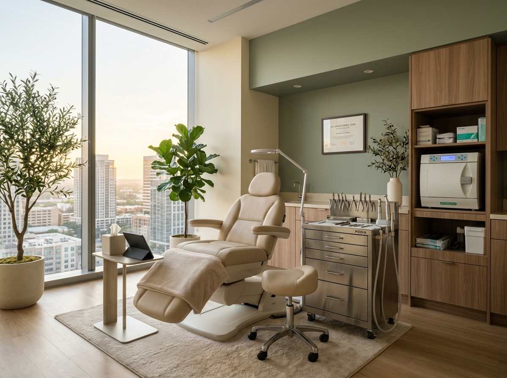
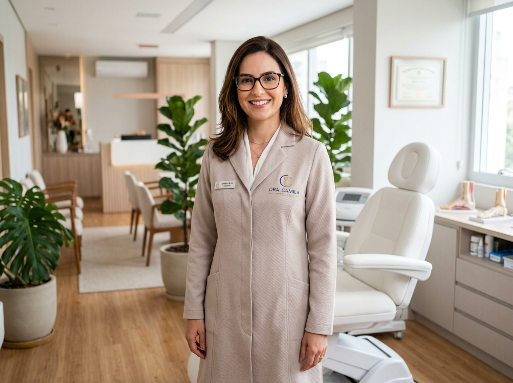
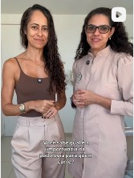

Cuidado e alívio a cada passo: saúde e alta performance para os seus pés
Atendimento especializado com a Dra. Camila Sousa. Referência em desencravamento indolor de unhas, podologia esportiva para atletas e corredores, laserterapia e podoprofilaxia com máximo rigor de biossegurança no Meireles.


Podóloga Especialista & Proprietária
Acolhimento humano e excelência científica na saúde dos seus pés
À frente da CS Podologia Clínica, a Dra. Camila Sousa dedica sua trajetória ao diagnóstico preciso e ao tratamento delicado e personalizado de patologias dos pés. Localizada no prestigiado complexo empresarial Torre Comercial Avenida Shopping, a clínica oferece uma experiência médica acolhedora, combinando tecnologia de ponta e mãos experientes.
Seja para quem busca alívio definitivo de uma unha encravada sem dor, tratamento eficaz de micoses com laserterapia ou recuperação da pisada após treinos intensos de corrida, cada atendimento é planejado para devolver leveza e liberdade à sua rotina.
- Atendimento humanizado e paciente: procedimentos delicados, sem pressa e focados no seu bem-estar.
- Pioneirismo em Podologia Esportiva: acompanhamento completo para corredores, maratonistas e praticantes de academia.
- Biossegurança máxima: instrumentos esterilizados em autoclave e descartáveis de uso único.
Sua unha ficou roxa depois do longão? Nós cuidamos de você!
Corredores de rua, maratonistas e praticantes de crossfit submetem os pés a impactos repetitivos que geram hematomas subungueais (unha roxa ou preta), bolhas de atrito e calosidades de sobrecarga. Na CS Podologia, você encontra tratamento especializado para proteger suas unhas e manter seu ritmo de treino sem dores.
🏃 Hematomas Subungueais
Descompressão rápida e indolor para drenar o sangue sob a unha e evitar sua perda definitiva.
🩹 Prevenção de Bolhas & Atrito
Orientações técnicas sobre corte anatômico, meias, calçados e proteção de zonas de impacto.
🦶 Órteses de Correção
Aparelhos ungueais delicados que redirecionam o crescimento da lâmina, impedindo que ela encrave.
⚡ Laserterapia Recuperativa
Acelera a cicatrização de tecidos inflamados e combate fungos proliferados pelo suor do tênis.
Soluções completas para a saúde, conforto e estética dos seus pés
Procedimentos realizados com anestésicos tópicos locais quando necessário, equipamentos de última geração e ambiente hospitalar de biossegurança no Meireles.
Podoprofilaxia Completa
Higienização clínica profunda, corte técnico anatômico das unhas (para nunca mais encravarem), desbaste suave de calosidades e esfoliação com hidratação terapêutica.
- Corte técnico correto das unhas
- Afinação e polimento da lâmina
- Sensação de pés novos e leves
Unha Encravada Indolor
Remoção cirúrgica da espícula (ponta de unha encravada) sem sofrimento. Técnica precisa que estanca o processo inflamatório e elimina a dor na hora da sessão.
- Procedimento sem dor e humanizado
- Curativo antisséptico especializado
- Retorno imediato às atividades
Laserterapia & Micoses
Aplicação de feixe de laser terapêutico para erradicação profunda de fungos (onicomicose), regeneração acelerada da lâmina e alívio de quadros dolorosos ou inflamatórios.
- Ação fungicida direta sem sobrecarga renal
- Bioestimulação celular e cicatrização
- Unhas limpas, claras e saudáveis
Órteses Ungueais (Aparelhos)
Aplicação de fibras de memória ou botões metálicos imperceptíveis que exercem tração controlada, corrigindo a curvatura excessiva da unha e impedindo recidivas de encravamento.
- Totalmente indolor e discreto
- Permite esmaltação e uso normal de sapatos
- Resultados duradouros comprovados
Calosidades & Fissuras
Desbaste micrométrico de calos duros, calos interdigitais (entre os dedos) e rachaduras no calcanhar, restaurando a maciez e eliminando o incômodo ao calçar sapatos fechados.
- Sem lâminas agressivas ou riscos à pele
- Cicatrização rápida de rachaduras dolorosas
- Hidratação oclusiva de alta absorção
Pé Diabético Especializado
Avaliação clínica periódica de sensibilidade, circulação e integridade cutânea. Prevenção ativa contra microlesões que possam evoluir para feridas ou úlceras complexas.
- Monitoramento de pontos de pressão
- Corte seguro que impede cortes acidentais
- Tranquilidade para pacientes e familiares
cspodologia_
✓ Oficial🦶 Cuidado e alívio a cada passo • Performance para atletas e corredores
699 seguidores • Meireles, Fortaleza - CE
▶ Vídeo RealO que dizem os pacientes que confiam seus pés à Dra. Camila Sousa
A clínica possui nota 4.8 estrelas no Google, fruto do compromisso diário com a pontualidade, higiene cirúrgica e atendimento atencioso.
“Excelente atendimento e profissionalismo. O local é agradável, organizado e transmite conforto, o que torna a experiência ainda melhor. Sem dúvida, um serviço de qualidade que demonstra cuidado e respeito com o cliente. Recomendo! Parabéns!”
“O atendimento da Camila é excelente, seu atendimento é impecável! O ambiente foi renovado e está cada dia melhor! A confiança é tanta no trabalho da Camila que sempre que há pacotes, eu compro logo! Aguardando novas promoções! 🥰🥰”
“Atendimento excelente, ambiente muito agradável e profissionais extremamente competentes. Satisfação plena. Meus pés são os mais agradecidos. 😊 Recomendo de olhos fechados!”
Perguntas Frequentes sobre os Tratamentos
Esclareça as dúvidas mais comuns antes de agendar sua primeira consulta na CS Podologia Clínica.
Localização Privilegiada no Meireles
Estamos na Torre Comercial Avenida Shopping, com portaria executiva, segurança, elevadores modernos e estacionamento no local.
Av. Dom Luís, nº 300 - Sala 904 (9º Andar)
Torre Comercial Avenida
Shopping
Meireles / Aldeota, Fortaleza - CE • CEP 60160-230
WhatsApp: (85) 99788-1793
Telefone Fixo: (85)
3013-2757
Segunda a Sexta: 09:00 às 18:00
Sábados: 08:00 às
12:00 (Com hora marcada)